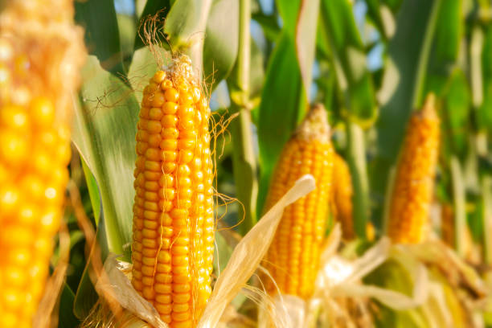
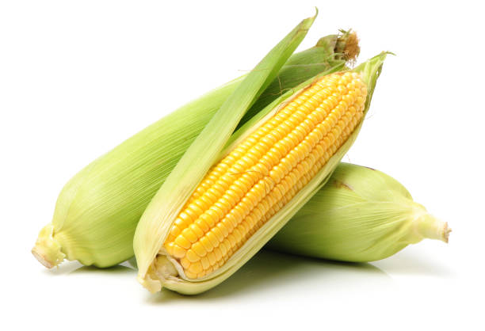
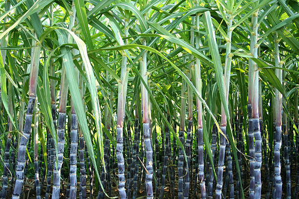
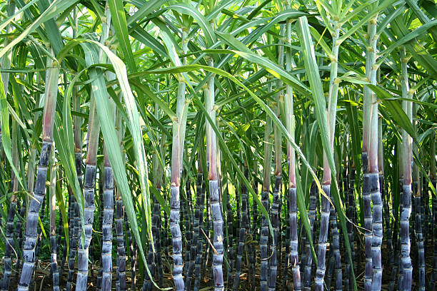
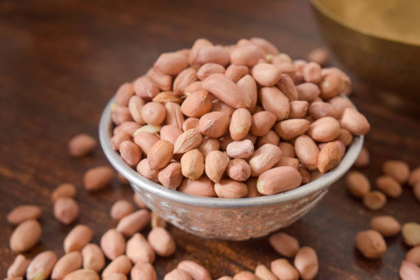
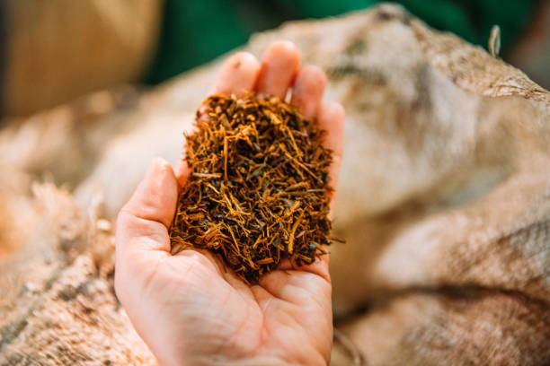

Maize is primarily grown in Odisha during the Kharif season (June to October) and also in Rabi (November to February). It is most cultivated in states like Karnataka and Andhra Pradesh, where it holds a significant market share. Maize thrives in well-drained, loamy soils with good fertility. The optimal soil temperature ranges from 20°C to 30°C. Nutritionally, maize is a good source of carbohydrates, fiber, and essential vitamins. Growing maize typically takes about 90-120 days, requiring moderate resources like water and fertilizers. Demand is particularly high in states like Maharashtra and Uttar Pradesh, where it is widely consumed.
ମକା ମୁଖ୍ୟତ ଖରିଫ ତୁରେ (ଜୁନ୍ ରୁ ଅକ୍ଟୋବର) ଏବଂ ରବି (ନଭେମ୍ବରରୁ ଫେବୃଆରୀ) ରେ ଓଡିଶାରେ ଚାଷ କରାଯାଏ | ଏହା କର୍ଣ୍ଣାଟକ ଏବଂ ଆନ୍ଧ୍ରପ୍ରଦେଶ ପରି ରାଜ୍ୟରେ ଅଧିକ ଚାଷ କରାଯାଏ, ଯେଉଁଠାରେ ଏହାର ବଜାର ଅଂଶ ରହିଛି | ମକା ଭଲ ଉର୍ବରତା ସହିତ ଭଲ ନିଷ୍କାସିତ, ମାଟିଆ ମାଟିରେ ବ େ | ମୃତ୍ତିକାର ସର୍ବୋଚ୍ଚ ତାପମାତ୍ରା 20 ° C ରୁ 30 ° C ମଧ୍ୟରେ ରହିଥାଏ | ପୁଷ୍ଟିକର ଖାଦ୍ୟ, ମକା କାର୍ବୋହାଇଡ୍ରେଟ୍, ଫାଇବର ଏବଂ ଅତ୍ୟାବଶ୍ୟକ ଭିଟାମିନ୍ ର ଏକ ଉତ୍ତମ ଉତ୍ସ | ମକା ବ ିବା ସାଧାରଣତ ପ୍ରାୟ 90-120 ଦିନ ନେଇଥାଏ, ଜଳ ଏବଂ ସାର ପରି ମଧ୍ୟମ ସମ୍ବଳ ଆବଶ୍ୟକ କରେ | ମହାରାଷ୍ଟ୍ର ଏବଂ ଉତ୍ତରପ୍ରଦେଶ ଭଳି ରାଜ୍ୟରେ ଏହାର ଚାହିଦା ଅଧିକ, ଯେଉଁଠାରେ ଏହା ବହୁଳ ଭାବରେ ଖିଆଯାଏ |
6.RAGI / 6.ରାଗି

Ragi, or finger millet, is primarily grown in Odisha during the Kharif season (June to October). It is most cultivated in Karnataka, which dominates its market share. Ragi thrives in well-drained, sandy or red soils with good fertility. The optimal soil temperature ranges from 25°C to 30°C. Nutritionally, ragi is rich in calcium, iron, and dietary fiber. Growing ragi typically takes about 90-150 days, requiring moderate resources such as water and fertilizers. Demand is particularly high in states like Tamil Nadu and Maharashtra, where it is valued for its nutritional benefits and as a staple food.
ରାଗି, କିମ୍ବା ଫିଙ୍ଗର ମିଲେଟ, ମୁଖ୍ୟତ ଖରିଫ ତୁରେ (ଜୁନ୍ ରୁ ଅକ୍ଟୋବର) ଓଡିଶାରେ ବ ିଥାଏ | ଏହା କର୍ଣ୍ଣାଟକରେ ସର୍ବାଧିକ ଚାଷ କରାଯାଏ, ଯାହା ଏହାର ବଜାର ଅଂଶ ଉପରେ ପ୍ରାଧାନ୍ୟ ଦେଇଥାଏ | ଭଲ ଉର୍ବରତା ସହିତ ଭଲ ନିଷ୍କାସିତ, ବାଲୁକା କିମ୍ବା ନାଲି ମୃତ୍ତିକାରେ ରାଗି ବୃଦ୍ଧି ପାଇଥାଏ | ମୃତ୍ତିକାର ସର୍ବୋଚ୍ଚ ତାପମାତ୍ରା 25 ° C ରୁ 30 ° C ମଧ୍ୟରେ ରହିଥାଏ | ପୁଷ୍ଟିକର ଖାଦ୍ୟରେ, ରାଗିରେ କ୍ୟାଲସିୟମ୍, ଆଇରନ୍ ଏବଂ ଡାଏଟାରୀ ଫାଇବରରେ ଭରପୂର | ବ ୁଥିବା ରାଗି ସାଧାରଣତ about ପ୍ରାୟ 90-150 ଦିନ ନେଇଥାଏ, ଜଳ ଏବଂ ସାର ପରି ମଧ୍ୟମ ଉତ୍ସ ଆବଶ୍ୟକ କରେ | ତାମିଲନାଡୁ ଏବଂ ମହାରାଷ୍ଟ୍ର ଭଳି ରାଜ୍ୟରେ ଚାହିଦା ଅଧିକ, ଯେଉଁଠାରେ ଏହାର ପୁଷ୍ଟିକର ଲାଭ ଏବଂ ଏକ ମୁଖ୍ୟ ଖାଦ୍ୟ ଭାବରେ ମୂଲ୍ୟବାନ ଅଟେ |
7.WHEAT / 7.ଗହମ


Wheat is primarily grown in Odisha during the Rabi season (November to April). While it is not the leading crop in the state, major production occurs in states like Punjab and Haryana, which dominate the market share. Wheat prefers well-drained, fertile loamy or sandy soils. The optimal soil temperature ranges from 10°C to 25°C. Nutritionally, wheat is a good source of carbohydrates, protein, and fiber. Growing wheat typically takes about 100-120 days, requiring resources like water, fertilizers, and labor. Demand is particularly high in states like Uttar Pradesh and Madhya Pradesh, where it is a staple food.
ଗହମ ମୁଖ୍ୟତ ରବି ତୁରେ (ନଭେମ୍ବରରୁ ଏପ୍ରିଲ୍) ସମୟରେ ଓଡିଶାରେ ଚାଷ କରାଯାଏ | ଏହା ରାଜ୍ୟରେ ଅଗ୍ରଣୀ ଫସଲ ହୋଇନଥିବାବେଳେ ବଜାର ଅଂଶ ଉପରେ ପ୍ରାଧାନ୍ୟ ଦେଉଥିବା ପଞ୍ଜାବ ଏବଂ ହରିୟାଣା ଭଳି ରାଜ୍ୟରେ ପ୍ରମୁଖ ଉତ୍ପାଦନ ହୁଏ। ଗହମ ଭଲ ନିଷ୍କାସିତ, ଉର୍ବର ଲୋମି କିମ୍ବା ବାଲୁକା ମୃତ୍ତିକାକୁ ପସନ୍ଦ କରେ | ମୃତ୍ତିକାର ସର୍ବୋଚ୍ଚ ତାପମାତ୍ରା 10 ° C ରୁ 25 ° C ମଧ୍ୟରେ ରହିଥାଏ | ପୁଷ୍ଟିକର ଖାଦ୍ୟ, ଗହମ କାର୍ବୋହାଇଡ୍ରେଟ୍, ପ୍ରୋଟିନ୍ ଏବଂ ଫାଇବରର ଏକ ଉତ୍ତମ ଉତ୍ସ | ଗହମ ବ ିବା ସାଧାରଣତ about ପ୍ରାୟ 100-120 ଦିନ ନେଇଥାଏ, ଜଳ, ସାର ଏବଂ ଶ୍ରମ ପରି ସମ୍ବଳ ଆବଶ୍ୟକ କରେ | ଉତ୍ତରପ୍ରଦେଶ ଏବଂ ମଧ୍ୟପ୍ରଦେଶ ଭଳି ରାଜ୍ୟରେ ଏହାର ଚାହିଦା ଅଧିକ, ଯେଉଁଠାରେ ଏହା ଏକ ମୁଖ୍ୟ ଖାଦ୍ୟ ଅଟେ |
8.COTTON / 8.କୋଟନ୍


Cotton is primarily grown in Odisha during the Kharif season (June to October). It is more commonly cultivated in states like Gujarat and Maharashtra, which dominate the market share. Cotton thrives in well-drained, fertile sandy loam or black soils. The optimal soil temperature ranges from 20°C to 30°C. Nutritionally, cotton seeds provide oil and protein, but cotton itself is not a food crop. Growing cotton typically takes about 150-180 days, requiring resources such as water, fertilizers, and pest management. Demand is particularly high in states like Tamil Nadu and Karnataka, where it is crucial for the textile industry.
ଖରିଫ ତୁରେ (ଜୁନ୍ ରୁ ଅକ୍ଟୋବର) କପା ମୁଖ୍ୟତ ଓଡିଶାରେ ଚାଷ କରାଯାଏ | ଗୁଜୁରାଟ ଏବଂ ମହାରାଷ୍ଟ୍ର ଭଳି ରାଜ୍ୟରେ ଏହା ଅଧିକ ଚାଷ କରାଯାଏ, ଯାହା ବଜାର ଅଂଶ ଉପରେ ପ୍ରାଧାନ୍ୟ ଦେଇଥାଏ | କପା ଭଲ ନିଷ୍କାସିତ, ଉର୍ବର ବାଲୁକା କାଦୁଅ କିମ୍ବା କଳା ମୃତ୍ତିକାରେ ବୃଦ୍ଧି ପାଇଥାଏ | ମୃତ୍ତିକାର ସର୍ବୋଚ୍ଚ ତାପମାତ୍ରା 20 ° C ରୁ 30 ° C ମଧ୍ୟରେ ରହିଥାଏ | ପୁଷ୍ଟିକର ଭାବରେ, କପା ମଞ୍ଜି ତେଲ ଏବଂ ପ୍ରୋଟିନ୍ ଯୋଗାଇଥାଏ, କିନ୍ତୁ କପା ନିଜେ ଖାଦ୍ୟ ଫସଲ ନୁହେଁ | କପା ବ ିବା ସାଧାରଣତ ପ୍ରାୟ 150-180 ଦିନ ନେଇଥାଏ, ଜଳ, ସାର, ଏବଂ କୀଟନାଶକ ପରିଚାଳନା ଭଳି ଉତ୍ସ ଆବଶ୍ୟକ କରେ | ତାମିଲନାଡୁ ଏବଂ କର୍ଣ୍ଣାଟକ ପରି ରାଜ୍ୟରେ ଚାହିଦା ଅଧିକ, ଯେଉଁଠାରେ ଏହା ବୟନ ଶିଳ୍ପ ପାଇଁ ଗୁରୁତ୍ୱପୂର୍ଣ୍ଣ ଅଟେ |
9.JUTE / 9.ଜଟ୍


Jute is primarily grown in Odisha during the Kharif season (June to October). It is most cultivated in West Bengal, which dominates the market share. Jute thrives in alluvial, well-drained, and fertile soils with high organic content. The optimal soil temperature ranges from 25°C to 35°C. Nutritionally, jute leaves are edible and rich in vitamins, but the primary product is the fiber. Growing jute typically takes about 120-150 days, requiring moderate resources such as water and fertilizers. Demand is particularly high in states like West Bengal and Bihar, where it is essential for packaging and textile industries.
ଜୁରି ମୁଖ୍ୟତ ଖରିଫ ତୁରେ (ଜୁନ୍ ରୁ ଅକ୍ଟୋବର) ଓଡିଶାରେ ଚାଷ କରାଯାଏ | ପଶ୍ଚିମବଙ୍ଗରେ ଏହା ସର୍ବାଧିକ ଚାଷ କରାଯାଏ, ଯାହା ବଜାର ଅଂଶ ଉପରେ ପ୍ରାଧାନ୍ୟ ଦେଇଥାଏ | ଉଚ୍ଚ ଜ ବିକ ପଦାର୍ଥ ସହିତ ଆଲୁଭିଆଲ୍, ଭଲ ନିଷ୍କାସିତ ଏବଂ ଉର୍ବର ମୃତ୍ତିକାରେ ଜୁଟ୍ ବୃଦ୍ଧି ପାଇଥାଏ | ମୃତ୍ତିକାର ସର୍ବୋଚ୍ଚ ତାପମାତ୍ରା 25 ° C ରୁ 35 ° C ମଧ୍ୟରେ ରହିଥାଏ | ପୁଷ୍ଟିକର ଭାବରେ, ପେଟ ପତ୍ର ଖାଇବା ଯୋଗ୍ୟ ଏବଂ ଭିଟାମିନ୍ରେ ଭରପୂର, କିନ୍ତୁ ପ୍ରାଥମିକ ଉତ୍ପାଦ ହେଉଛି ଫାଇବର | ବ ୁଥିବା ଜଟ ସାଧାରଣତ ପ୍ରାୟ 120-150 ଦିନ ନେଇଥାଏ, ଜଳ ଏବଂ ସାର ପରି ମଧ୍ୟମ ଉତ୍ସ ଆବଶ୍ୟକ କରେ | ପଶ୍ଚିମବଙ୍ଗ ଏବଂ ବିହାର ଭଳି ରାଜ୍ୟରେ ଚାହିଦା ଅଧିକ, ଯେଉଁଠାରେ ଏହା ପ୍ୟାକେଜିଂ ଏବଂ ବୟନ ଶିଳ୍ପ ପାଇଁ ଜରୁରୀ ଅଟେ |
10.SUGARCANE / 10.ସୁଗାର
 

Sugarcane is primarily grown in Odisha during the Kharif season (June to October) and can also be harvested in Rabi (November to April). It is most cultivated in states like Uttar Pradesh and Maharashtra, which dominate the market share. Sugarcane thrives in well-drained, fertile loamy or sandy soils with good moisture retention. The optimal soil temperature ranges from 20°C to 30°C. Nutritionally, sugarcane is a source of sucrose, vitamins, and minerals. Growing sugarcane typically takes about 12-18 months, requiring substantial resources like water and fertilizers. Demand is particularly high in states like Maharashtra and Gujarat, where it is processed into sugar.
ଖରିଫ ମୁଖ୍ୟତ ଖରିଫ ତୁରେ (ଜୁନ୍ ରୁ ଅକ୍ଟୋବର) ଓଡିଶାରେ ଚାଷ କରାଯାଏ ଏବଂ ରବି (ନଭେମ୍ବରରୁ ଏପ୍ରିଲ୍) ରେ ମଧ୍ୟ ଅମଳ କରାଯାଇପାରେ | ଏହା ଉତ୍ତରପ୍ରଦେଶ ଏବଂ ମହାରାଷ୍ଟ୍ର ଭଳି ରାଜ୍ୟରେ ଅଧିକ ଚାଷ କରାଯାଏ, ଯାହା ବଜାର ଅଂଶ ଉପରେ ପ୍ରାଧାନ୍ୟ ଦେଇଥାଏ | ଭଲ ଆର୍ଦ୍ରତା ଧାରଣ ସହିତ ଭଲ ନିଷ୍କାସିତ, ଉର୍ବର ଲୋମି କିମ୍ବା ବାଲୁକା ମୃତ୍ତିକାରେ ଆଖୁ ବୃଦ୍ଧି ପାଇଥାଏ | ମୃତ୍ତିକାର ସର୍ବୋଚ୍ଚ ତାପମାତ୍ରା 20 ° C ରୁ 30 ° C ମଧ୍ୟରେ ରହିଥାଏ | ପୁଷ୍ଟିକର ଭାବରେ, ଆଖୁ ସୁକ୍ରୋଜ୍, ଭିଟାମିନ୍ ଏବଂ ଖଣିଜ ପଦାର୍ଥର ଉତ୍ସ | ଆଖୁ ବ ିବା ସାଧାର ପ୍ରାୟ 12-18 ମାସ ସମୟ ନେଇଥାଏ, ଜଳ ଏବଂ ସାର ପରି ମହତ୍ ପୂର୍ଣ ଉତ୍ସ ଆବଶ୍ୟକ କରେ | ମହାରାଷ୍ଟ୍ର ଏବଂ ଗୁଜୁରାଟ ଭଳି ରାଜ୍ୟରେ ଚାହିଦା ଅଧିକ, ଯେଉଁଠାରେ ଏହାକୁ ଚିନିରେ ପ୍ରକ୍ରିୟାକରଣ କରାଯାଏ |
11.GROUNDNUT / 11.ଭୂମି ବାଦାମ


Groundnut in Odisha is primarily grown in the Kharif season, from June to October. It has significant market share in states like Gujarat and Andhra Pradesh, where it is both cultivated and sold extensively. Groundnuts thrive in well-drained sandy loam or sandy soil with a pH of 6.0 to 7.0. Optimal soil temperature ranges from 20°C to 30°C. They require about 90-120 days to mature. The crop needs moderate water and nutrient inputs. Demand is high in Maharashtra, Tamil Nadu, and Karnataka, driven by their culinary uses and oil production.
ଓଡ଼ିଶାର ଗ୍ରାଉଣ୍ଡନାଟ୍ ମୁଖ୍ୟତ Kh ଖରିଫ୍ season ତୁରେ, ଜୁନ୍ ରୁ ଅକ୍ଟୋବର ମଧ୍ୟରେ ଚାଷ କରାଯାଏ | ଗୁଜୁରାଟ ଏବଂ ଆନ୍ଧ୍ରପ୍ରଦେଶ ଭଳି ରାଜ୍ୟରେ ଏହାର ବଜାର ଅଂଶ ରହିଛି, ଯେଉଁଠାରେ ଏହା ଉଭୟ ଚାଷ କରାଯାଏ ଏବଂ ବହୁଳ ଭାବରେ ବିକ୍ରି ହୁଏ | ଗ୍ରାଉଣ୍ଡ୍ ବାଦାମଗୁଡିକ 6.0 ରୁ 7.0 pH ସହିତ ଭଲ ନିଷ୍କାସିତ ବାଲୁକା କାଦୁଅ କିମ୍ବା ବାଲୁକା ମାଟିରେ ବୃଦ୍ଧି ପାଇଥାଏ | ମୃତ୍ତିକାର ସର୍ବୋଚ୍ଚ ତାପମାତ୍ରା 20 ° C ରୁ 30 ° C ମଧ୍ୟରେ ରହିଥାଏ | ପରିପକ୍ୱ ହେବାକୁ ସେମାନେ ପ୍ରାୟ 90-120 ଦିନ ଆବଶ୍ୟକ କରନ୍ତି | ଫସଲରେ ମଧ୍ୟମ ଜଳ ଏବଂ ପୁଷ୍ଟିକର ଇନପୁଟ୍ ଆବଶ୍ୟକ | ମହାରାଷ୍ଟ୍ର, ତାମିଲନାଡୁ, ଏବଂ କର୍ଣ୍ଣାଟକରେ ସେମାନଙ୍କର ରନ୍ଧନ ବ୍ୟବହାର ଏବଂ ତ oil ଳ ଉତ୍ପାଦନ ଦ୍ୱାରା ଚାହିଦା ଅଧିକ |
12.TOBACCO / 12.ଟୋବାକୋ


Tobacco in Odisha is primarily grown during the Kharif season, from June to October. It is mostly cultivated in Andhra Pradesh and Gujarat, which dominate the market. Tobacco thrives in sandy loam or loamy soil with good drainage and a pH of 5.8 to 6.5. Optimal soil temperature ranges from 20°C to 30°C. The crop takes about 90-120 days to mature and requires adequate water and fertilizers. Demand is highest in states like Maharashtra, Uttar Pradesh, and Punjab, largely driven by the cigarette and bidi industries.
ଓଡ଼ିଶାରେ ତମାଖୁ ମୁଖ୍ୟତ Kh ଖରିଫ season ତୁରେ, ଜୁନ୍ ରୁ ଅକ୍ଟୋବର ପର୍ଯ୍ୟନ୍ତ ଚାଷ କରାଯାଏ | ଏହା ମୁଖ୍ୟତ And ଆନ୍ଧ୍ରପ୍ରଦେଶ ଏବଂ ଗୁଜୁରାଟରେ ଚାଷ କରାଯାଏ, ଯାହା ବଜାରରେ ପ୍ରାଧାନ୍ୟ ଦେଇଥାଏ | ଭଲ ଡ୍ରେନେଜ୍ ଏବଂ pH 5.8 ରୁ 6.5 ସହିତ ବାଲୁକା ଲୋମ୍ କିମ୍ବା ଲୋମି ମାଟିରେ ତମାଖୁ ବୃଦ୍ଧି ପାଇଥାଏ | ମୃତ୍ତିକାର ସର୍ବୋଚ୍ଚ ତାପମାତ୍ରା 20 ° C ରୁ 30 ° C ମଧ୍ୟରେ ରହିଥାଏ | ଫସଲ ପରିପକ୍ୱ ହେବାକୁ ପ୍ରାୟ 90-120 ଦିନ ଲାଗିଥାଏ ଏବଂ ପର୍ଯ୍ୟାପ୍ତ ଜଳ ଏବଂ ସାର ଆବଶ୍ୟକ କରେ | ମହାରାଷ୍ଟ୍ର, ଉତ୍ତରପ୍ରଦେଶ ଏବଂ ପଞ୍ଜାବ ଭଳି ରାଜ୍ୟରେ ଚାହିଦା ସର୍ବାଧିକ, ମୁଖ୍ୟତ the ସିଗାରେଟ୍ ଏବଂ ବିଡି ଶିଳ୍ପ ଦ୍ୱାରା ପରିଚାଳିତ |
13.MUSTARD / 13.ମୁଷ୍ଟାର୍ଡ

Mustard in Odisha is primarily grown during the Rabi season, from October to March. It is most cultivated and sold in states like Rajasthan and Haryana. Mustard prefers well-drained loamy or sandy loam soil with a pH of 6.0 to 7.5. The optimal soil temperature for growth ranges from 15°C to 25°C. The crop takes about 90-120 days to mature and requires moderate water and nutrients. Demand is particularly high in states like Punjab, Madhya Pradesh, and Gujarat, driven by cooking oil production and culinary uses.
ଓଡିଶାରେ ସୋରିଷ ମୁଖ୍ୟତ the ଅକ୍ଟୋବରରୁ ମାର୍ଚ୍ଚ ପର୍ଯ୍ୟନ୍ତ ରବି season ତୁରେ ବ grown ିଥାଏ | ଏହା ରାଜସ୍ଥାନ ଏବଂ ହରିୟାଣା ଭଳି ରାଜ୍ୟରେ ଅଧିକ ଚାଷ କରାଯାଏ ଏବଂ ବିକ୍ରି ହୁଏ | ସୋରିଷ 6.0 ରୁ 7.5 pH ସହିତ ଭଲ ନିଷ୍କାସିତ ଲୋମି କିମ୍ବା ବାଲୁକା ଲୋମ ମାଟିକୁ ପସନ୍ଦ କରେ | ଅଭିବୃଦ୍ଧି ପାଇଁ ସର୍ବୋଚ୍ଚ ମୃତ୍ତିକାର ତାପମାତ୍ରା 15 ° C ରୁ 25 ° C ମଧ୍ୟରେ ରହିଥାଏ | ଫସଲ ପରିପକ୍ୱ ହେବାକୁ ପ୍ରାୟ 90-120 ଦିନ ଲାଗେ ଏବଂ ମଧ୍ୟମ ଜଳ ଏବଂ ପୁଷ୍ଟିକର ଖାଦ୍ୟ ଆବଶ୍ୟକ କରେ | ପଞ୍ଜାବ, ମଧ୍ୟପ୍ରଦେଶ, ଏବଂ ଗୁଜୁରାଟ ଭଳି ରାଜ୍ୟରେ ଚାହିଦା ଅଧିକ, ରନ୍ଧନ ତେଲ ଉତ୍ପାଦନ ଏବଂ ରନ୍ଧନ ବ୍ୟବହାର ଦ୍ୱାରା ପରିଚାଳିତ |
14.SESAME / 14.ସେସମ୍

Sesame in Odisha is primarily grown during the Kharif season, from June to September. It is most cultivated and sold in states like Gujarat and Maharashtra. Sesame thrives in well-drained sandy loam or loamy soil with a pH of 6.0 to 7.0. The optimal soil temperature for growth ranges from 25°C to 30°C. The crop takes about 90-120 days to mature, requiring moderate water and nutrients. Demand is particularly high in states like Tamil Nadu, Karnataka, and West Bengal, driven by its use in cooking oil, snacks, and traditional dishes.
ଓଡ଼ିଶାରେ ସେଓ ମୁଖ୍ୟତ the ଖରିଫ season ତୁରେ ଜୁନ୍ ରୁ ସେପ୍ଟେମ୍ବର ପର୍ଯ୍ୟନ୍ତ ଚାଷ କରାଯାଏ | ଗୁଜୁରାଟ ଏବଂ ମହାରାଷ୍ଟ୍ର ପରି ରାଜ୍ୟରେ ଏହା ସର୍ବାଧିକ ଚାଷ କରାଯାଏ ଏବଂ ବିକ୍ରି ହୁଏ | ତେଲ 6.0 ରୁ 7.0 pH ସହିତ ଭଲ ନିଷ୍କାସିତ ବାଲୁକା ଲୋମ କିମ୍ବା ଲୋମ ମାଟିରେ ବ thr ିଥାଏ | ଅଭିବୃଦ୍ଧି ପାଇଁ ସର୍ବୋଚ୍ଚ ମାଟିର ତାପମାତ୍ରା 25 ° C ରୁ 30 ° C ମଧ୍ୟରେ ରହିଥାଏ | ଫସଲ ପରିପକ୍ୱ ହେବାକୁ ପ୍ରାୟ 90-120 ଦିନ ଲାଗେ, ମଧ୍ୟମ ଜଳ ଏବଂ ପୁଷ୍ଟିକର ଖାଦ୍ୟ ଆବଶ୍ୟକ କରେ | ତାମିଲନାଡୁ, କର୍ଣ୍ଣାଟକ, ଏବଂ ପଶ୍ଚିମବଙ୍ଗ ଭଳି ରାଜ୍ୟରେ ଚାହିଦା ଅଧିକ, ରନ୍ଧନ ତେଲ, ସ୍ନାକ୍ସ ଏବଂ ପାରମ୍ପାରିକ ଖାଦ୍ୟରେ ଏହାର ବ୍ୟବହାର ଦ୍ୱାରା ପରିଚାଳିତ |
15.NIGER / 15.ନାଇଜର
Niger in Odisha is primarily grown during the Kharif season, from June to September. It is most cultivated and sold in states like Odisha, Gujarat, and Madhya Pradesh. Niger thrives in well-drained sandy or loamy soil with a pH of 5.5 to 7.0. The optimal soil temperature for growth ranges from 20°C to 30°C. The crop takes about 90-100 days to mature and requires moderate water and nutrient inputs. Demand is higher in states like Maharashtra and Karnataka, driven by its use in cooking oil, traditional snacks, and as bird feed.
ଓଡ଼ିଶାରେ ନାଇଜର ମୁଖ୍ୟତ ଖରିଫ ତୁରେ ଜୁନ୍ ରୁ ସେପ୍ଟେମ୍ବର ମଧ୍ୟରେ ଚାଷ କରାଯାଏ | ଏହା ଓଡିଶା, ଗୁଜୁରାଟ ଏବଂ ମଧ୍ୟପ୍ରଦେଶ ଭଳି ରାଜ୍ୟରେ ସର୍ବାଧିକ ଚାଷ କରାଯାଏ ଏବଂ ବିକ୍ରି ହୁଏ | 5.5 ରୁ 7.0 pH ସହିତ ନାଇଜର ଭଲ ନିଷ୍କାସିତ ବାଲି କିମ୍ବା ଲୋମିଆ ମାଟିରେ ବୃଦ୍ଧି ପାଇଥାଏ | ଅଭିବୃଦ୍ଧି ପାଇଁ ସର୍ବୋଚ୍ଚ ମାଟିର ତାପମାତ୍ରା 20 ° C ରୁ 30 ° C ମଧ୍ୟରେ ରହିଥାଏ | ଫସଲ ପରିପକ୍ୱ ହେବାକୁ ପ୍ରାୟ 90-100 ଦିନ ଲାଗେ ଏବଂ ମଧ୍ୟମ ଜଳ ଏବଂ ପୁଷ୍ଟିକର ଇନପୁଟ୍ ଆବଶ୍ୟକ କରେ | ରନ୍ଧନ ତେଲ, ପାରମ୍ପାରିକ ସ୍ନାକ୍ସ ଏବଂ ପକ୍ଷୀ ଫିଡ୍ ଭାବରେ ଏହାର ବ୍ୟବହାର ଦ୍ୱାରା ମହାରାଷ୍ଟ୍ର ଏବଂ କର୍ଣ୍ଣାଟକ ଭଳି ରାଜ୍ୟରେ ଚାହିଦା ଅଧିକ |
16.COCONUT / 16.ନଡ଼ିଆ


Coconut in Odisha is grown year-round, with peak production during the monsoon season from June to September. It is most cultivated in Kerala and Tamil Nadu, which dominate the market. Coconuts thrive in well-drained sandy loam or loamy soil with a pH of 5.0 to 8.0. Optimal soil temperature ranges from 27°C to 30°C. The trees take about 6-7 years to start yielding, with ongoing resource needs for water and nutrients. Demand is highest in states like Kerala, Karnataka, and Maharashtra, driven by culinary uses, coconut oil production, and traditional dishes.
ଜୁନ୍ ରୁ ସେପ୍ଟେମ୍ବର ମଧ୍ୟରେ ମ ସୁମୀ ସମୟରେ ଶିଖର ଉତ୍ପାଦନ ସହିତ ଓଡିଶାରେ ନଡ଼ିଆ ବର୍ଷସାରା ଚାଷ କରାଯାଏ | ଏହା କେରଳ ଏବଂ ତାମିଲନାଡୁରେ ଅଧିକ ଚାଷ କରାଯାଏ, ଯାହା ବଜାରରେ ପ୍ରାଧାନ୍ୟ ଦେଇଥାଏ | 5.0 ରୁ 8.0 pH ସହିତ ନଡ଼ିଆ ଭଲ ନିଷ୍କାସିତ ବାଲୁକା ଲୋମ୍ କିମ୍ବା ଲୋମି ମାଟିରେ ବ ive େ | ମୃତ୍ତିକାର ସର୍ବୋଚ୍ଚ ତାପମାତ୍ରା 27 ° C ରୁ 30 ° C ମଧ୍ୟରେ ରହିଥାଏ | ଗଛଗୁଡିକ ଅମଳ ଆରମ୍ଭ କରିବାକୁ ପ୍ରାୟ 6-7 ବର୍ଷ ସମୟ ନେଇଥାଏ, ଜଳ ଏବଂ ପୁଷ୍ଟିକର ଖାଦ୍ୟ ପାଇଁ ଆବଶ୍ୟକ ଉତ୍ସ ସହିତ | ରୋଷେଇ ବ୍ୟବହାର, ନଡିଆ ତେଲ ଉତ୍ପାଦନ ଏବଂ ପାରମ୍ପାରିକ ଖାଦ୍ୟ ଦ୍ୱାରା କେରଳ, କର୍ଣ୍ଣାଟକ, ଏବଂ ମହାରାଷ୍ଟ୍ର ଭଳି ରାଜ୍ୟରେ ଚାହିଦା ସର୍ବାଧିକ |
17.ARECANUT / 17.ARECANUT


Arecanut in Odisha is typically grown during the monsoon season, from June to September. It is primarily cultivated in Karnataka and Kerala, which have the largest market share. Arecanut thrives in well-drained, loamy or sandy soils with a pH of 5.5 to 7.0. Optimal soil temperature ranges from 25°C to 30°C. The palms take about 4-6 years to start yielding, requiring consistent water and nutrient inputs. Demand is particularly high in states like Tamil Nadu, Maharashtra, and West Bengal, driven by its use in betel nut preparation and traditional customs.
ଓଡିଶାରେ ଆରେକାନଟ୍ ସାଧାରଣତ ଜୁନ୍ ରୁ ସେପ୍ଟେମ୍ବର ମଧ୍ୟରେ ମ ସୁମୀ ସମୟରେ ବ grown ିଥାଏ | ଏହା ମୁଖ୍ୟତ Karn କର୍ଣ୍ଣାଟକ ଏବଂ କେରଳରେ ଚାଷ କରାଯାଏ, ଯାହାର ବଜାର ଅଂଶ ସର୍ବାଧିକ | 5.5 ରୁ 7.0 pH ସହିତ ଆରେକାନଟ୍ ଭଲ ନିଷ୍କାସିତ, ଲୋମି କିମ୍ବା ବାଲୁକା ମୃତ୍ତିକାରେ ବୃଦ୍ଧି ପାଇଥାଏ | ମୃତ୍ତିକାର ସର୍ବୋଚ୍ଚ ତାପମାତ୍ରା 25 ° C ରୁ 30 ° C ମଧ୍ୟରେ ରହିଥାଏ | ଖଜୁରୀ ଅମଳ ଆରମ୍ଭ କରିବାକୁ ପ୍ରାୟ 4-6 ବର୍ଷ ସମୟ ନେଇଥାଏ, କ୍ରମାଗତ ଜଳ ଏବଂ ପୁଷ୍ଟିକର ଇନପୁଟ୍ ଆବଶ୍ୟକ କରେ | ତାମିଲନାଡୁ, ମହାରାଷ୍ଟ୍ର, ଏବଂ ପଶ୍ଚିମବଙ୍ଗ ଭଳି ରାଜ୍ୟରେ ଚାହିଦା ଅଧିକ, ବେଟେଲ ବାଦାମ ପ୍ରସ୍ତୁତି ଏବଂ ପାରମ୍ପାରିକ ରୀତିନୀତିରେ ଏହାର ବ୍ୟବହାର ଦ୍ୱାରା ପରିଚାଳିତ |
18.TEA / 18.ଚା


Tea in Odisha is primarily grown in the post-monsoon season, from October to March. The state itself has a modest market share, while Assam and West Bengal are the largest producers. Tea thrives in well-drained, acidic soils (pH 4.5 to 6.5). Optimal soil temperature ranges from 20°C to 30°C. The plants take about 3 years to start yielding, requiring regular water and nutrient management. Demand is highest in states like Assam, West Bengal, and Kerala, driven by strong consumer preference for various tea types, including black and green tea, in both domestic and export markets.
ଓଡିଶାରେ ଚା ମୁଖ୍ୟତ October ଅକ୍ଟୋବରରୁ ମାର୍ଚ୍ଚ ମଧ୍ୟରେ ମ so ସୁମୀ ପରବର୍ତ୍ତୀ season ତୁରେ ବ grown ିଥାଏ | ଆସାମ ଏବଂ ପଶ୍ଚିମବଙ୍ଗ ସବୁଠାରୁ ବଡ ଉତ୍ପାଦକ ହୋଇଥିବାବେଳେ ରାଜ୍ୟ ନିଜେ ଏକ ସାମାନ୍ୟ ବଜାର ଅଂଶ ପାଇଛନ୍ତି। ଭଲ ନିଷ୍କାସିତ, ଅମ୍ଳୀୟ ମୃତ୍ତିକାରେ ଚା ବ ives େ (pH 4.5 ରୁ 6.5) | ମୃତ୍ତିକାର ସର୍ବୋଚ୍ଚ ତାପମାତ୍ରା 20 ° C ରୁ 30 ° C ମଧ୍ୟରେ ରହିଥାଏ | ଉଦ୍ଭିଦଗୁଡିକ ଅମଳ ଆରମ୍ଭ କରିବାକୁ ପ୍ରାୟ 3 ବର୍ଷ ସମୟ ନେଇଥାଏ, ନିୟମିତ ଜଳ ଏବଂ ପୁଷ୍ଟିକର ପରିଚାଳନା ଆବଶ୍ୟକ କରେ | ଆସାମ, ପଶ୍ଚିମବଙ୍ଗ, ଏବଂ କେରଳ ଭଳି ରାଜ୍ୟରେ ଚାହିଦା ସର୍ବାଧିକ, ଉଭୟ ଘରୋଇ ଏବଂ ରପ୍ତାନି ବଜାରରେ କଳା ଏବଂ ସବୁଜ ଚା ସମେତ ବିଭିନ୍ନ ଚା ପ୍ରକାରର ଗ୍ରାହକଙ୍କ ପସନ୍ଦ ଦ୍ୱାରା ପରିଚାଳିତ |
19.CASHEW NUT / 19.କ୍ୟାଶ୍ ନଟ୍

Cashew nut in Odisha is primarily grown during the Kharif season, from April to September. The largest market share and cultivation occur in Maharashtra and Karnataka. Cashews thrive in well-drained sandy or loamy soil with a pH of 4.5 to 6.5. Optimal soil temperature ranges from 20°C to 30°C. The trees take about 3-4 years to start yielding, requiring moderate water and nutrient inputs. Demand is particularly high in states like Kerala, Tamil Nadu, and Gujarat, driven by the growing use of cashews in snacks, sweets, and cooking, as well as in the export market.
ଓଡ଼ିଶାରେ କାଜୁ ବାଦାମ ମୁଖ୍ୟତ Kh ଖରିଫ season ତୁରେ, ଏପ୍ରିଲରୁ ସେପ୍ଟେମ୍ବର ପର୍ଯ୍ୟନ୍ତ ଚାଷ କରାଯାଏ | ସର୍ବ ବୃହତ ବଜାର ଅଂଶ ଏବଂ ଚାଷ ମହାରାଷ୍ଟ୍ର ଏବଂ କର୍ଣ୍ଣାଟକରେ ଘଟିଥାଏ | କାଜୁ ଭଲ ଭାବରେ ନିଷ୍କାସିତ ବାଲି କିମ୍ବା ମାଟିରେ pH 4.5 ରୁ 6.5 ସହିତ ବୃଦ୍ଧି ପାଇଥାଏ | ମୃତ୍ତିକାର ସର୍ବୋଚ୍ଚ ତାପମାତ୍ରା 20 ° C ରୁ 30 ° C ମଧ୍ୟରେ ରହିଥାଏ | ଗଛଗୁଡିକ ଅମଳ ଆରମ୍ଭ କରିବାକୁ ପ୍ରାୟ 3-4 ବର୍ଷ ସମୟ ନେଇଥାଏ, ମଧ୍ୟମ ଜଳ ଏବଂ ପୁଷ୍ଟିକର ଇନପୁଟ୍ ଆବଶ୍ୟକ କରେ | କେରଳ, ତାମିଲନାଡୁ, ଏବଂ ଗୁଜୁରାଟ ଭଳି ରାଜ୍ୟରେ ଚାହିଦା ଅଧିକ, ସ୍ନାକ୍ସ, ମିଠା, ରାନ୍ଧିବା ଏବଂ ରପ୍ତାନି ବଜାରରେ କାଜୁ ବ୍ୟବହାର ବ drive ଼ିବାରେ ଲାଗିଛି।
20.RUBBER / 20.ରବର

Rubber in Odisha is typically grown year-round, with peak tapping during the monsoon season. The largest market share and cultivation occur in Kerala, which dominates rubber production in India. Rubber thrives in well-drained, loamy soils with a pH of 4.5 to 6.0. Optimal soil temperature ranges from 25°C to 35°C. Trees take about 5-7 years to start yielding latex and require consistent water and nutrient management. Demand is highest in states like Kerala, Tamil Nadu, and Maharashtra, driven by the use of rubber in various industries, including tires, footwear, and consumer goods.
ଓଡିଶାରେ ରବର ସାଧାରଣତ year ବର୍ଷସାରା ବ ିଥାଏ, ମ ସୁମୀ ସମୟରେ ଶିଖର ଟ୍ୟାପ୍ ହୋଇଥାଏ | ସବୁଠାରୁ ବଡ ବଜାର ଅଂଶ ଏବଂ ଚାଷ କେରଳରେ ଘଟିଥାଏ, ଯାହା ଭାରତରେ ରବର ଉତ୍ପାଦନ ଉପରେ ପ୍ରାଧାନ୍ୟ ଦେଇଥାଏ | 4.5 ରୁ 6.0 pH ସହିତ ଭଲ ନିଷ୍କାସିତ, ଲୋମହୀନ ମୃତ୍ତିକାରେ ରବର ବୃଦ୍ଧି ପାଇଥାଏ | ମୃତ୍ତିକାର ସର୍ବୋଚ୍ଚ ତାପମାତ୍ରା 25 ° C ରୁ 35 ° C ମଧ୍ୟରେ ରହିଥାଏ | ଗଛଗୁଡିକ ଲାଟେକ୍ସ ଅମଳ ଆରମ୍ଭ କରିବା ପାଇଁ ପ୍ରାୟ 5-7 ବର୍ଷ ସମୟ ନେଇଥାଏ ଏବଂ କ୍ରମାଗତ ଜଳ ଏବଂ ପୁଷ୍ଟିକର ପରିଚାଳନା ଆବଶ୍ୟକ କରେ | କେରଳ, ତାମିଲନାଡୁ, ଏବଂ ମହାରାଷ୍ଟ୍ର ଭଳି ରାଜ୍ୟରେ ଚାହିଦା ସର୍ବାଧିକ, ଟାୟାର, ପାଦୁକା ଏବଂ ଉପଭୋକ୍ତା ସାମଗ୍ରୀ ସମେତ ବିଭିନ୍ନ ଶିଳ୍ପରେ ରବର ବ୍ୟବହାର ଦ୍ୱାରା ପରିଚାଳିତ |